Price Action (Momentum)
The momentum half of the timing appraisal: five indicators that feed one red/amber/green light, for entry and exit only.
Price Action is the study of price momentum, the companion to Technical Analysis (the study of patterns). Both answer one question only, is my timing good, bad, or indifferent, and both feed a single traffic light. Neither generates trade ideas, that is a game for fools.
The gist
- PA is the study of momentum; TA is the study of patterns. Use them in conjunction for TIMING only, feeding one red (don't trade) / amber (partial position) / green (trade) traffic light. Never use TA and PA to generate trade ideas, that is a game for fools.
- Horizons: TA looks over weeks, months and years for the big picture; PA looks over days and weeks for current momentum, inside our 20-60 trading day (1-3 month) horizon. Even with PA you start on the bigger picture (~2 years) then zoom in.
- RSI = 100 - 100/(1 + RS), where RS = average of X days' up closes / average of X days' down closes. Overbought >70, oversold <30. Default X = 14; we use X = 20 to match the 20-60 day horizon.
- RSI reversal does NOT mean price reversal: a stock can keep rising while RSI falls (momentum just slows). NEM 2021, the 14-day flagged 'overbought' four times but the 20-day filtered the false ones, leaving only the true overbought signal in May 2021.
- SMA = average close over N days (a LAGGING indicator). We use 20 / 60 / 120 / 250 days = 1 month / 1 quarter / half-year / full year, NOT the retail 50/100/200 which mean nothing. Worked example on closes 6,5,6,7,9,8,8,10,13,16 gives 10-day = 8.8 and 3-day = 13; the 3-day cutting the 10-day from below = positive momentum.
- SMA crosses map to horizons: a 20-day crossing a 60-day tends to confirm or deny 3-month views; a 60-day crossing a 120-day or 250-day tends to confirm or deny 6-month views. On WING, negative-to-positive turns took ~3 months and positive-to-negative ~2 months, ex-COVID.
- EMA uses the same 20/60/120/250 periods but reduces lag by weighting recent prices. EMA(t) = Close(t-1) x mult + EMA(t-1) x (1 - mult), where mult = 2/(N+1); seeded off the SMA. 20-day mult = 0.0952381 (9.52%), 10-day = 0.1818 (18.18%), 60-day = 3.27%, 120-day = 1.65%, 250-day = 0.79%.
- MACD = short EMA - long EMA (default 12 - 26 with a 9-day signal; our variant 20 - 60 with a 10-day signal). The primary read is the signal-line crossover (from below = positive, from above = negative); the zero line is where the two EMAs cross. MACD has NO overbought/oversold bounds, so fading historically wide divergence gets you run over.
- Heikin-Ashi (average bar): HA-Open = 0.5 x (prev Open + prev Close); HA-Close = 0.25 x (Open + High + Low + Close); HA-High = max(High, Open, Close); HA-Low = min(Low, Open, Close). Hollow = uptrend, filled = downtrend. Read weekly then daily and measure run-length, e.g. XPEL downtrends last 1-3 weeks, uptrends 5-10 weeks.
- Timing only, in conjunction: don't require perfect timing, scale in and out as preventative risk management, and if it's not right, watchlist it and wait. Options structures make timing more agnostic but are beyond PTM scope.
Where price action fits: momentum, not ideas
- The previous video covered Technical Analysis, patterns that recur through history, to judge whether trade-idea timing is good (green), bad (red), or indifferent (amber).
- Price Action is the same kind of check but for MOMENTUM, and it feeds the same traffic light.
- If timing looks wrong at the TA/PA stage, you don't force the trade, you keep it on the watchlist and wait for a better entry.
- You must use TA and PA together, not in isolation.
Price action is layer two of the timing appraisal. It never tells you WHAT to trade, only whether now is a good moment to act on an idea you already generated from fundamentals.
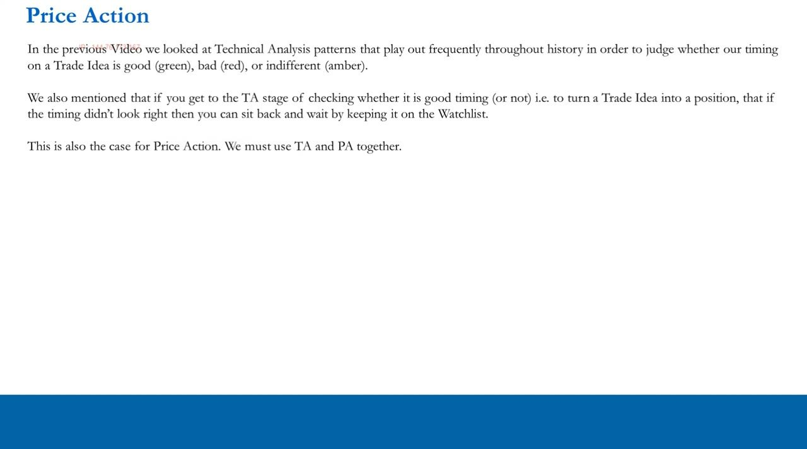
Two horizons: TA for the picture, PA for the moment
- TA gets the bigger picture over weeks, months and years to give context to the 1-3 month horizon.
- PA works over days and weeks to see whether momentum is on your side entering a 20-60 day position.
- TA is the study of patterns and formations; PA is the study of momentum, and you use them in conjunction.
- Even with PA you still look at the bigger picture to put current momentum into context.
- PA, like TA, is not magic, it uses past price data and false signals frequently occur.
Our time horizon is 20-60 trading days. TA frames the landscape; PA tells us if the current is flowing with us or against us for that window.
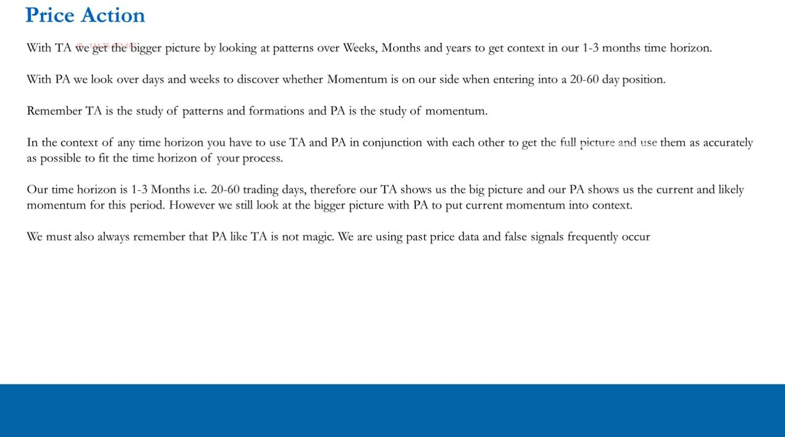
The price action checklist: five momentum indicators
- Indicator 1: Relative Strength Index (RSI), 14-day and 20-day.
- Indicator 2: Simple Moving Averages (20, 60, 120, 250 days).
- Indicator 3: Exponential Moving Averages (20, 60, 120, 250 days).
- Indicator 4: MACD, (12-26,9) default and our (20-60,10) variant.
- Indicator 5: Heikin-Ashi candles.
- You may add to this list, but respect the law of diminishing marginal utility, work smart, not hard.
Five indicators, one output. Each is a lens on momentum; together they resolve the timing question into a single red/amber/green call.
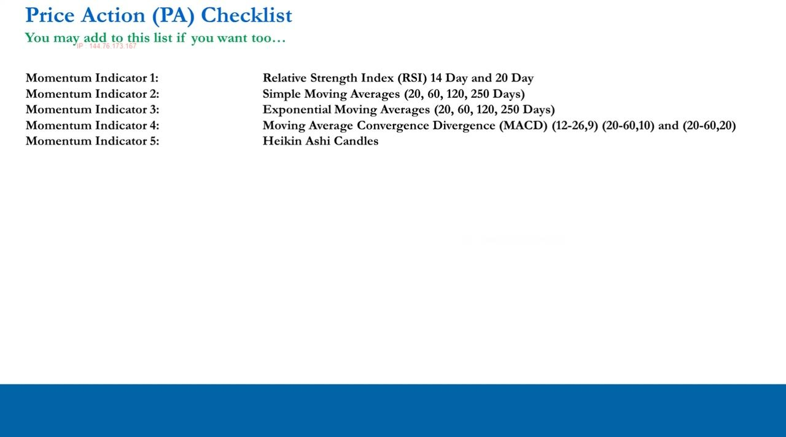
RSI: the formula and the vernacular
- RSI = 100 - 100/(1 + RS), oscillating between 0 and 100.
- RS = average of X days' up closes / average of X days' down closes.
- Above 70 = 'overbought', below 30 = 'oversold' (treat the vernacular in quotes, with caution).
- Most software defaults to X = 14; we change it to X = 20 to match the 20-60 day horizon.
- Very strong price moves = strong momentum, which the RSI picks up; when RSI reverses it's argued momentum is leaving the move.
Treat 'overbought' and 'oversold' with the same skepticism as 'cheap' and 'expensive' on the fundamental side. The number is useful, but only if you understand what the calculation actually says.
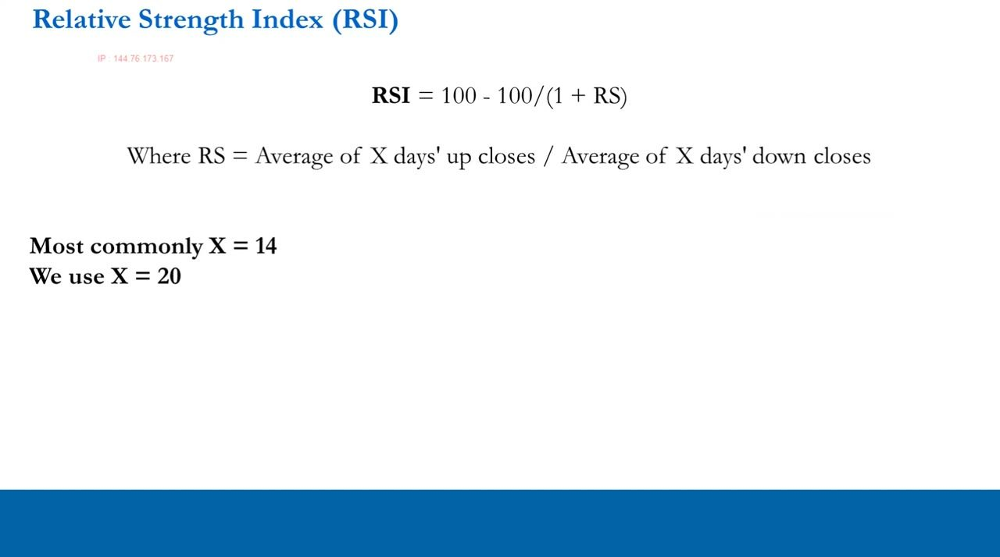
RSI in practice: NEM 2021, why 20 beats 14
- On the 14-day RSI, Newmont (NEM) touched ~70 on roughly four occasions in 2021, each read as 'overbought' by TA analysts.
- On three of those the RSI fell but the stock consolidated and ultimately went HIGHER, momentum slowed, price did not reverse.
- The one genuine overbought signal was May 2021, at ~73.74 with RSI in the high 70s near 80, after which the stock actually dropped.
- The 20-day RSI filters out the false 14-day flags and leaves only that true May 2021 signal.
- Key discipline: an RSI reversal is not a price reversal, price can keep going the same way, just slower, or go flat.
This is the whole RSI lesson in one chart. The 14-day fires too often and cries wolf; the 20-day, matched to our horizon, isolates the one signal that mattered.
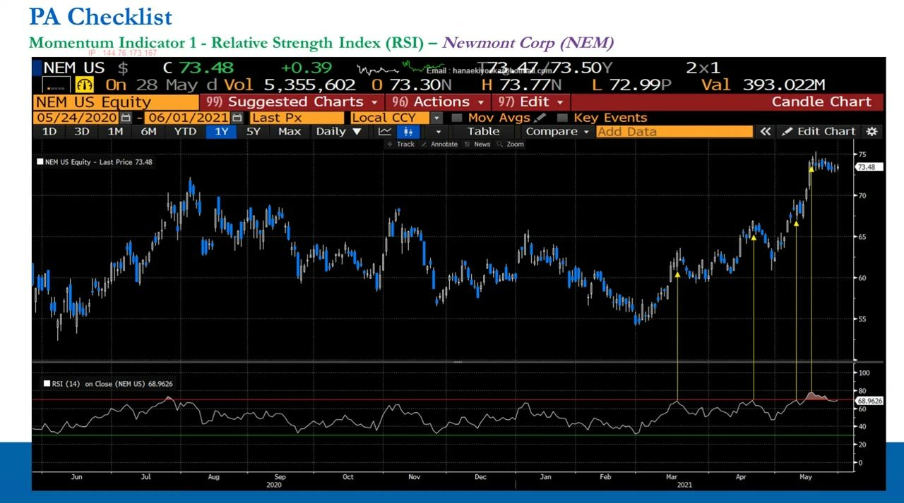
SMA: what it is and the worked example
- An SMA is a stock's average close over a given number of days, a LAGGING indicator, used only to confirm or deny moves.
- Worked example, 10 closes of 6, 5, 6, 7, 9, 8, 8, 10, 13, 16: the 10-day average = 8.8 and the 3-day average = 13.
- Plotting both, the 3-day cuts the 10-day from BELOW, indicating positive momentum (the reverse, cutting from above, is negative).
- A 20-day SMA is simply the sum of the last 20 trading days' closes divided by 20.
Moving averages confirm or deny whether momentum is slowing, rising, or turning. Because they lag, they are a confirmation tool, never a leading trigger.
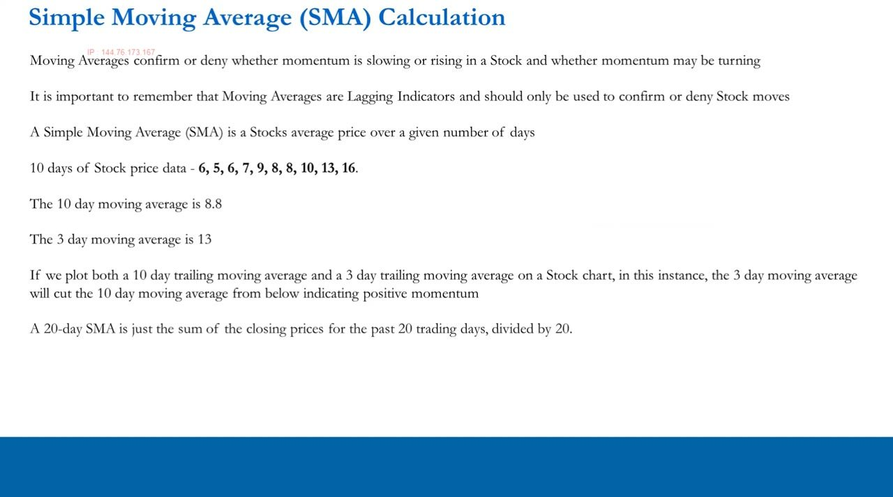
SMA periods and crosses: 20/60/120/250, not 50/100/200
- Retail uses 50/100/200-day averages, but those numbers have no significance in the stock market.
- We use 20 = one month, 60 = one quarter (also the gap between quarterly earnings), 120 = half-year, 250 = a full reporting year, numbers that actually mean something.
- A 20-day crossing a 60-day tends to confirm or deny 3-month views (our horizon).
- A 60-day crossing a 120-day or 250-day tends to confirm or deny 6-month views.
- On the S&P 500 the four SMAs stacked in bullish order (20 above 60 above 120 above 250) confirmed a sustained uptrend out of the COVID lows.
Aligning the averages to real market and reporting cadence is the point. The cross of the fast over the slow is your momentum-turn signal, mapped to a specific horizon.
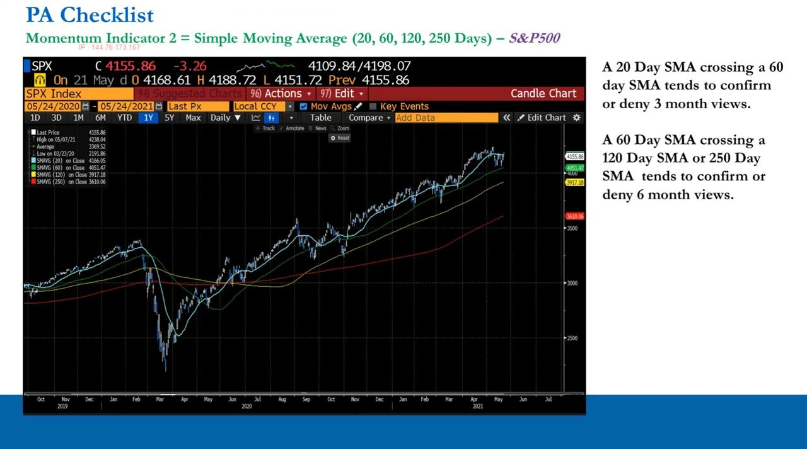
SMA case study: WING, timing a bullish entry
- Method: start at ~2 years, then zoom to 1 year, then the last two quarters and/or YTD, then the current quarter.
- On WING the 20-day crossed the 60-day from above (bearish) in Sep 2019 and back from below in Dec 2019, roughly 3 months.
- Ex-COVID, negative-to-positive turns ran ~3 months and positive-to-negative turns ~2 months (the COVID crash/rebound was a violent ~1-month exception).
- Coming in bullish with short-term momentum unclear, the call is amber: put on a partial (one-third or half) position, bid in the low 130s, then add on a momentum turn or as catalysts play out.
There is no hard-and-fast rulebook. You drill down from the big picture, read how long turns historically take, and make a sensible, sized decision, best-behavior practice, not rules.
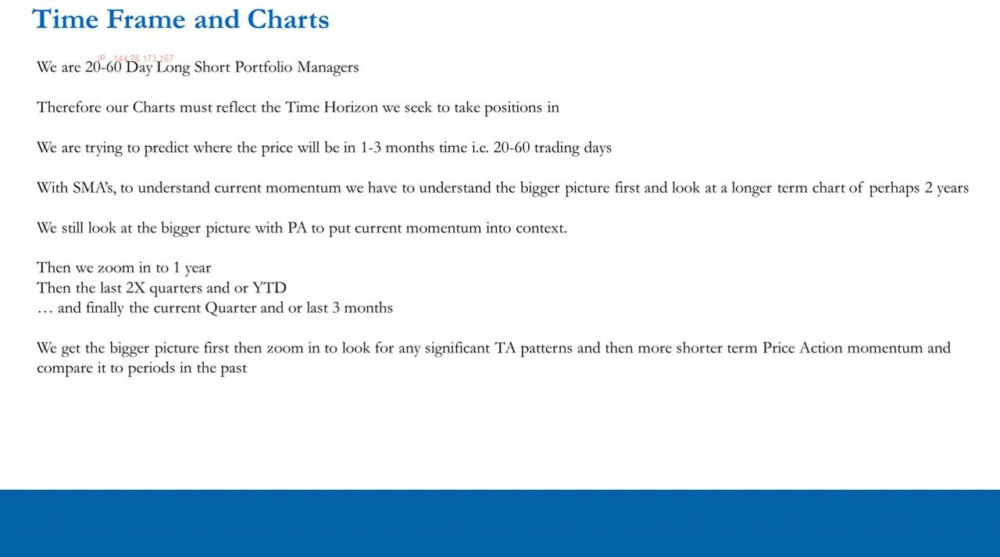
EMA: reducing the lag
- 'Exponential' sounds impressive but really isn't, it's an SMA that weights recent prices more heavily.
- A 20-day SMA has a 20-day lag because it's computed on a rolling basis from day 21 onward; the EMA cuts that lag.
- The weighting on the most recent price depends on the number of periods in the average.
- An EMA's calculation for a given day depends on the EMA calculations of all prior days.
- Same significant periods as SMA, 20, 60, 120 and 250 days, applied to our 20-60 day frame.
The EMA is the SMA made more responsive. It reacts faster to the newest prices, so it turns sooner, useful when your window is only 20-60 days.
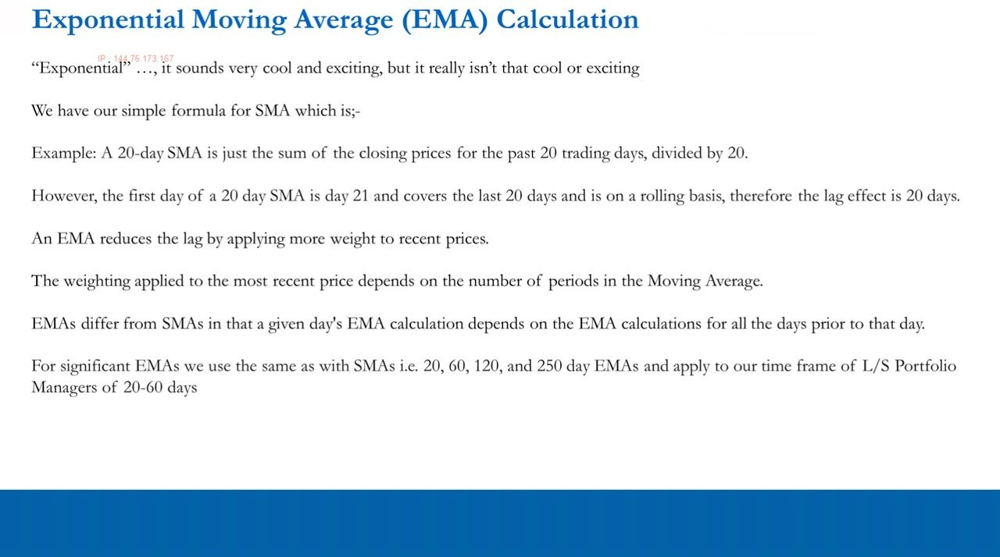
EMA: the formula, worked step by step
- EMA(t) = (Close(t-1) x Multiplier) + {EMA(t-1) x (1 - Multiplier)}, where Multiplier = 2/(N + 1).
- For a 20-day EMA, Multiplier = 2/(20+1) = 0.0952381.
- Seed: with yesterday's close $65.89 and a 20-day SMA of $62.54, the first EMA = ($65.89 x 0.0952381) + {$62.54 x (1 - 0.0952381)} = $62.86.
- Next day, close $67.22: ($67.22 x 0.0952381) + {$62.86 x (1 - 0.0952381)} = $63.27.
- Reference multipliers: 20-day = 9.52%, 10-day = 18.18%, 60-day = 3.27%, 120-day = 1.65%, 250-day = 0.79%, the shorter the EMA, the more sensitive to recent moves.
The EMA is seeded off the SMA and then rolls forward off yesterday's EMA and yesterday's close. Understanding the calculation is what separates you from the retail trader who just reads the line.
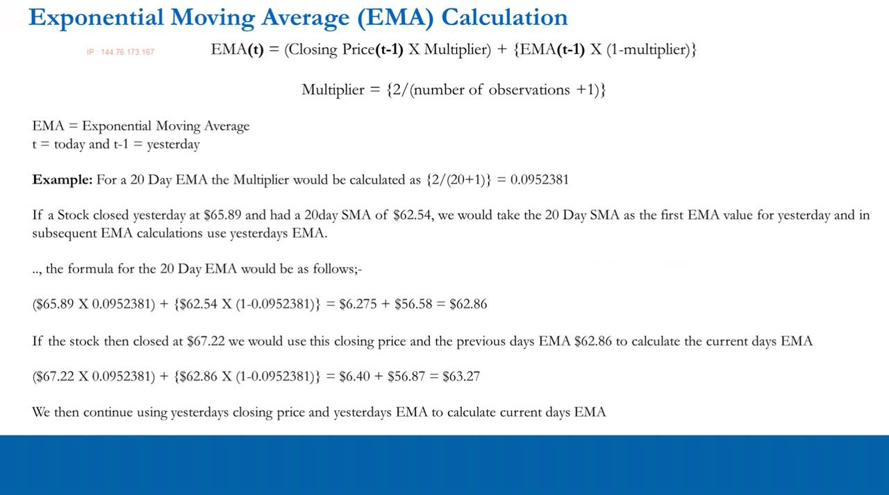
MACD: the difference of two EMAs
- MACD is a momentum oscillator measuring the difference between two EMA periods: the longer EMA subtracted from the shorter, giving the MACD line.
- The MACD line fluctuates above and below a zero line as the EMAs converge, cross and diverge.
- A signal line is an EMA of the MACD line itself.
- Default formula: 12-period EMA minus 26-period EMA, with a 9-day EMA of the MACD as the signal line, used by almost all retail traders 'like a religion'.
- But 12, 26 and 9 have no real significance for stocks (the only faint FOREX link still leaves 26 unexplained), so we switch to our own periods.
MACD is built directly on the EMAs, which is why it follows them in the sequence. It condenses two moving averages into one momentum line plus a signal.
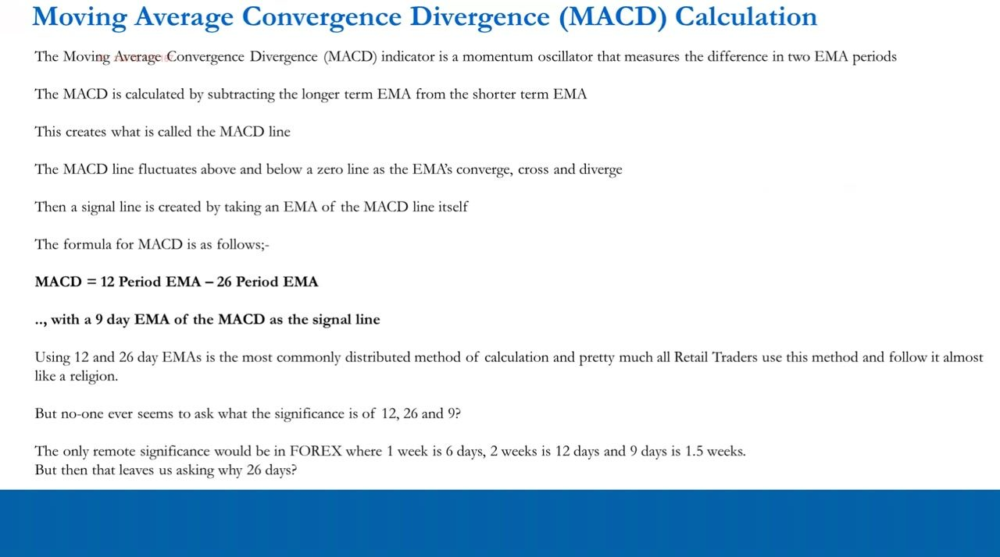
MACD interpretation and its danger: CHWY
- Our variant: MACD = 20-day EMA - 60-day EMA, with a 10-day EMA of the MACD as the signal line.
- Absolute read: 20-EMA above 60-EMA = positive MACD line; below = negative. Relative read: MACD vs signal line gives positive/negative divergence.
- The primary signal is the signal-line crossover (crossing from below = positive momentum, from above = negative); the zero line marks where the two EMAs cross.
- On CHWY the MACD line was -4.9868 (negative in absolute terms, 20-EMA below 60-EMA since March 2021) but had just crossed the signal line from BELOW, a bullish relative turn.
- With a bullish predisposition that's an amber: buy a partial, add if the MACD line goes positive.
- MACD has NO overbought/oversold bounds, so fading a historically wide divergence during a months-long fundamental move gets you run over.
CHWY shows the two layers can disagree, negative absolute, positive relative, and how to size that as amber. The absence of upper/lower limits is the trap that ruins TA-only traders.
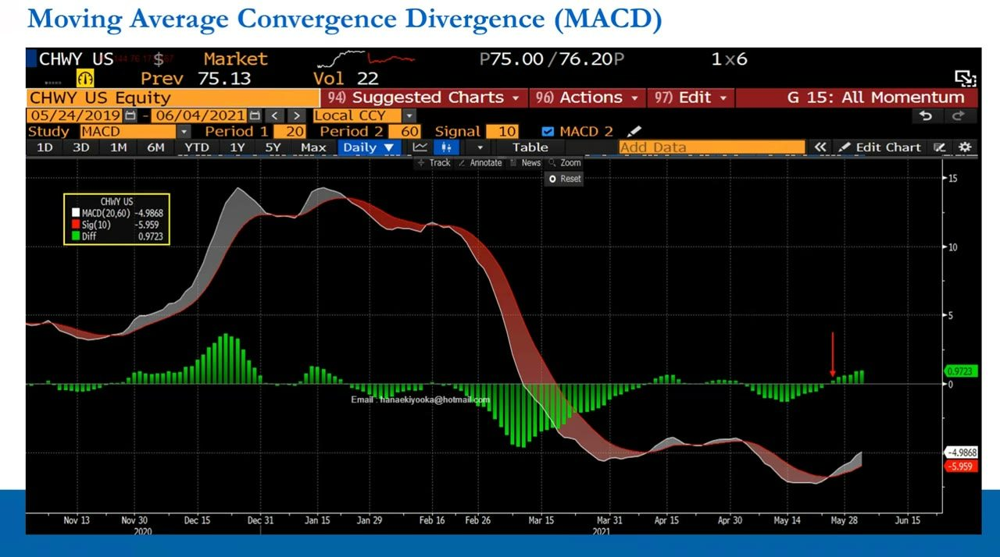
Heikin-Ashi: the average bar
- 'Heikin-Ashi' is Japanese for 'average bar', translate the fancy name back to English and focus on the calculation.
- HA-Open = 0.5 x (previous Open + previous Close).
- HA-Close = 0.25 x (Open + High + Low + Close).
- HA-High = max(High, Open, Close); HA-Low = min(Low, Open, Close).
- Because each bar references prior average bars, the result is smoother: hollow bars stay hollow through a predominant uptrend, filled (blue) through a predominant downtrend.
Where regular candles show variation within a trend, the average bar smooths it away and tells you the DOMINANT trend, a price-action head-check against false signals.
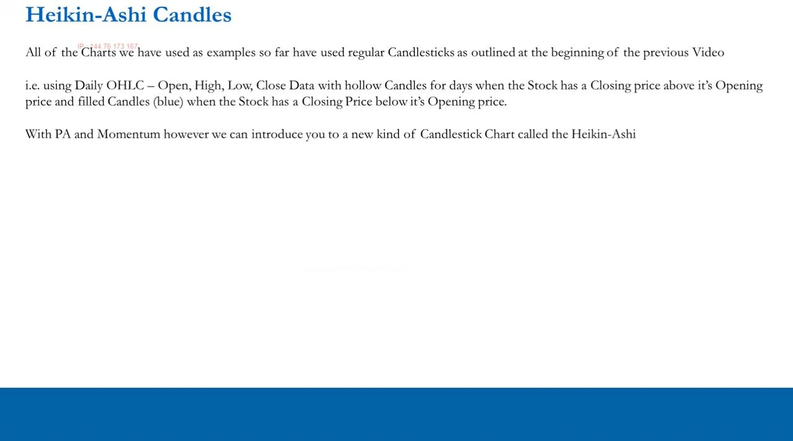
Heikin-Ashi in practice: run-length and ALK
- Read weekly first, then daily, and measure how long trends run. On XPEL, weekly downtrends lasted 1-3 weeks and uptrends 5-10 weeks (ex the Feb-Mar 2020 crash).
- That run-length lets you time entries (accumulate into the second or third short downtrend) and exits (fade out near week 10 of an uptrend).
- Average bars also help shorts, pinpoint where an exhausted positive trend turns negative, and cover where a negative trend exhausts (e.g. Uber's positive bounces lasting ~10 trading days).
- For ranging stocks like ALK (Alaska Air), the average bars show a rally off the Jan 27 low into the Apr 7 high, then filled bars clustering into a sideways-to-lower phase, a spot to leg into a short.
- Use Heikin-Ashi in conjunction with RSI, SMA, EMA and MACD, not alone.
The practical edge is measuring trend duration in the average bars and matching it to your 20-60 day window, so you accumulate into weakness and scale out into exhausted strength.
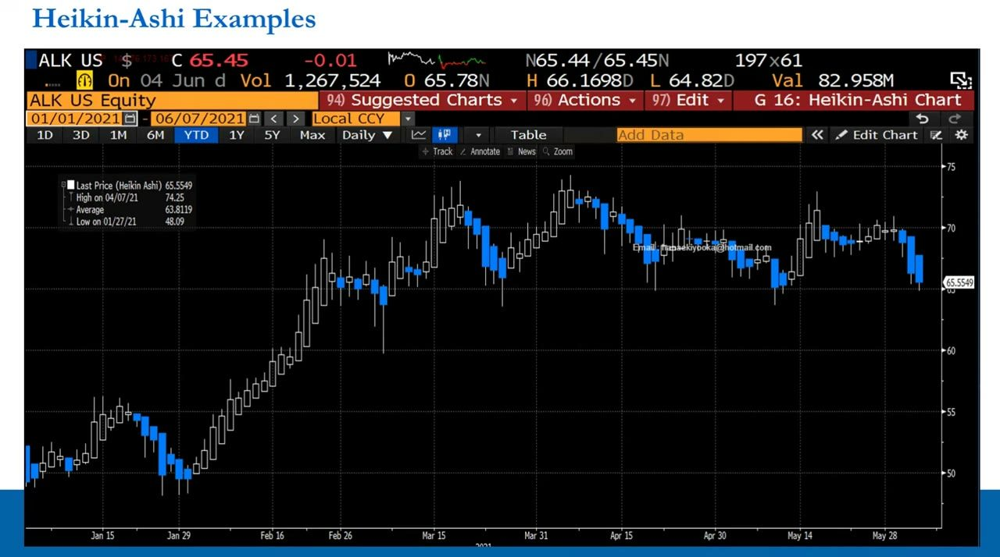
Tying it together: timing only, in conjunction
- We are 20-60 day, predominantly fundamental long/short PMs; TA and PA are for TIMING only.
- Timing wrong at the TA/PA stage? Watchlist it and wait. In a position and both confirm your view? Let it run. Both deny it and you're losing? Best to cut.
- You don't need perfect timing, a strong fundamental view with catalysts plus TA/PA lined up 'pretty well' is a green light.
- We predict the future (the next 20-60 days), we don't react to current price, and we don't fight the tape stubbornly; seek entry within 20 days but don't force it.
- Scaling in and out of longs and shorts is preventative risk management; options structures make timing more agnostic but are beyond PTM scope.
- Above all: don't use TA and PA to generate trade ideas, that is a game for fools.
The close of the timing section. TA and PA improve your entries and exits over many trades; they never source the idea. Scaling is the risk-management payoff of getting timing roughly right.
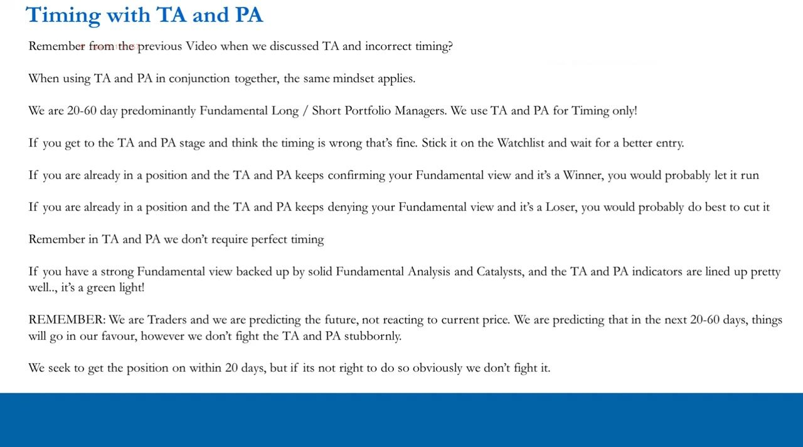
Glossary
- Price Action (PA)The study of price MOMENTUM over days and weeks; the companion to TA, used only to time entries and exits within the 20-60 day horizon.
- Traffic lightThe timing verdict fed by TA and PA together: green = trade, amber = partial/half position, red = do not trade.
- RSIRelative Strength Index = 100 - 100/(1 + RS), RS = avg up closes / avg down closes; oscillates 0-100, 'overbought' >70, 'oversold' <30. We use a 20-day, not the default 14.
- SMASimple Moving Average, the average close over N days; a lagging confirm/deny tool. We use 20/60/120/250 days (month/quarter/half-year/year).
- EMAExponential Moving Average, an SMA that weights recent prices more to cut lag. EMA(t) = Close(t-1) x mult + EMA(t-1) x (1 - mult), mult = 2/(N+1).
- MultiplierThe EMA weight 2/(N+1): 20-day = 0.0952381 (9.52%), 10-day = 18.18%, 60-day = 3.27%, 120-day = 1.65%, 250-day = 0.79%.
- MACDMoving Average Convergence Divergence = short EMA - long EMA. Default 12-26 with a 9-day signal; our variant 20-60 with a 10-day signal. No overbought/oversold bounds.
- MACD line vs signal lineThe MACD line is the EMA difference; the signal line is a 10-day EMA of the MACD. A crossover from below = positive momentum, from above = negative (the primary read).
- Zero lineThe level where the MACD line is zero, i.e. where the two underlying EMAs cross.
- Divergence (MACD)Relative measure: MACD-minus-signal positive and widening = positive divergence/momentum; negative and widening = negative; narrowing = converging/slowing.
- Heikin-Ashi (average bar)Smoothed candles: HA-Open = 0.5 x (prev O + prev C), HA-Close = 0.25 x (O+H+L+C), HA-High = max(H,O,C), HA-Low = min(L,O,C). Hollow = uptrend, filled = downtrend.
- Scaling in/outBuilding or trimming a position in partial tranches using TA/PA, a form of preventative risk management that makes timing less binary.
- Lagging indicatorA signal computed from past data that confirms or denies a move after it starts, e.g. moving averages, never a leading trigger.